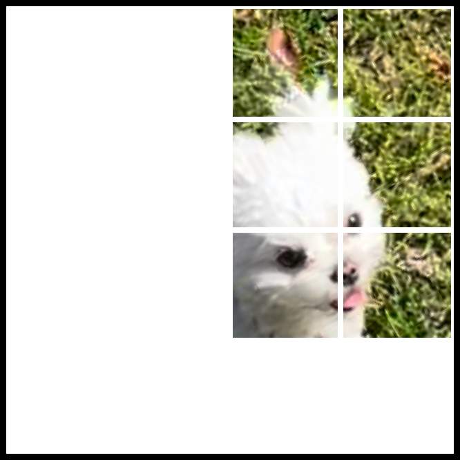
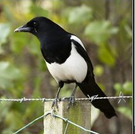
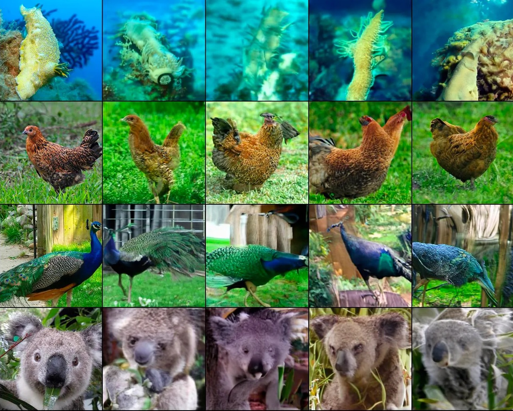

Self-Supervised Learning from Images with a Joint-Embedding Predictive Architecture
| Authors | Mahmoud Assran, Quentin Duval, Ishan Misra, Piotr Bojanowski, Pascal Vincent, Michael G. Rabbat, Yann LeCun, Nicolas Ballas |
|---|---|
| Year | 2023 |
| Venue | Computer Vision and Pattern Recognition |
| Citations | 719 (85 influential) |
| DOI | 10.1109/CVPR52729.2023.01499 |
Overview
N/A
Abstract
This paper demonstrates an approach for learning highly semantic image representations without relying on hand-crafted data-augmentations. We introduce the Image-based Joint-embedding Predictive Architecture (I-jepa), a non-generative approach for self-supervised learning from images. The idea behind I-jepa is simple: from a single context block, predict the representations of various target blocks in the same image. A core design choice to guide I-jepa towards producing semantic representations is the masking strategy; specifically, it is crucial to (a) sample target blocks with sufficiently large scale (semantic), and to (b) use a sufficiently informative (spatially distributed) context block. Empirically, when combined with Vision transformers, we find I-jepa to be highly scalable. For instance, we train a ViT-Huge/14 on ImageNet using 16 A100 GPUs in under 72 hours to achieve strong downstream performance across a wide range of tasks, from linear classification to object counting and depth prediction.
Figures and Diagrams



